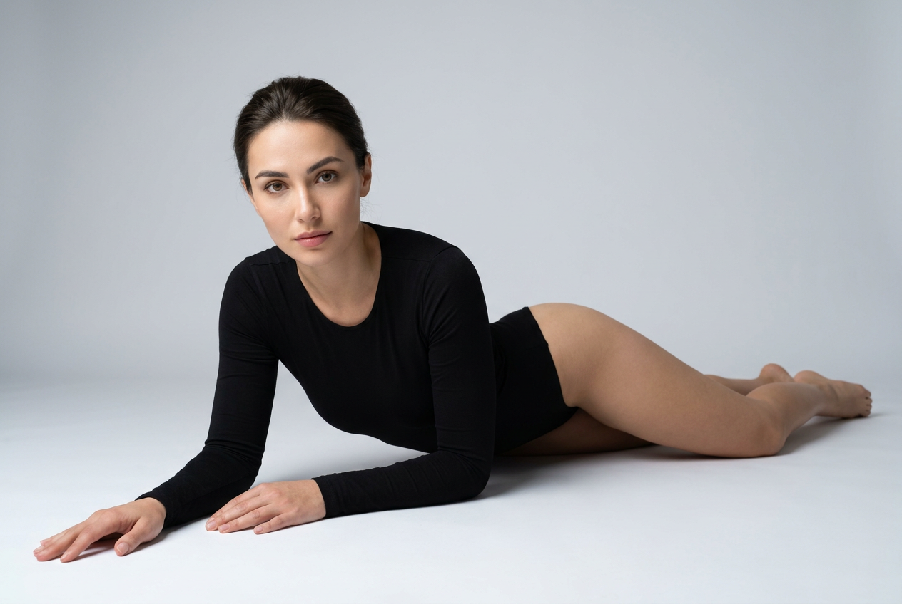
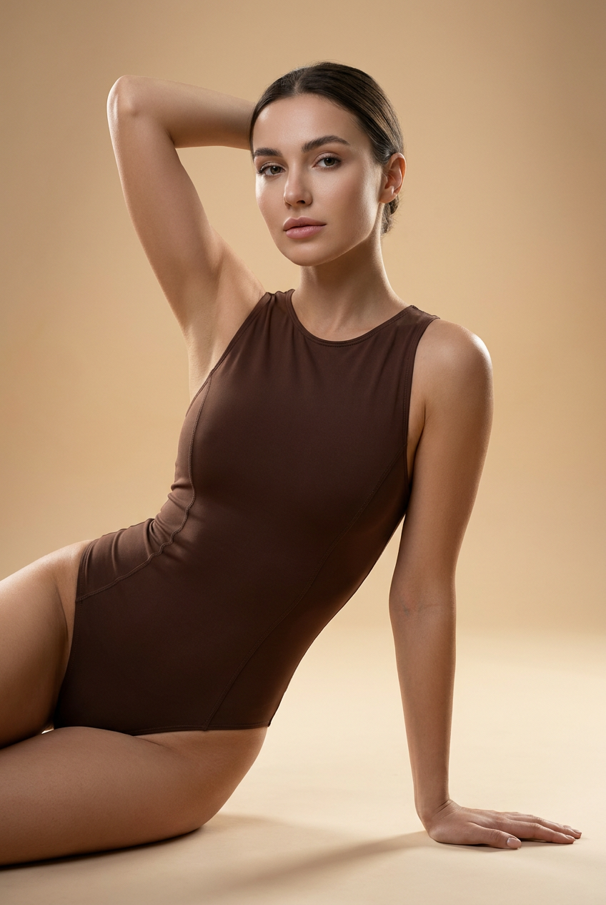
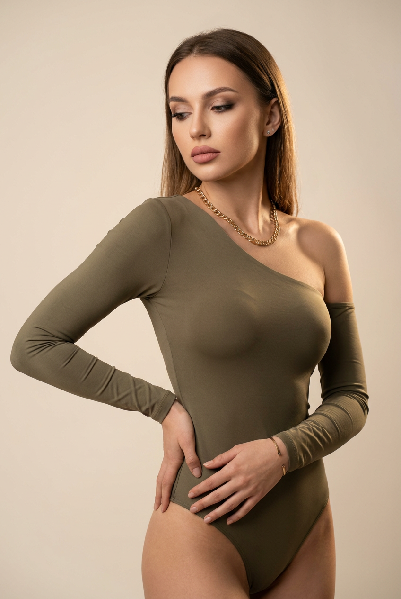
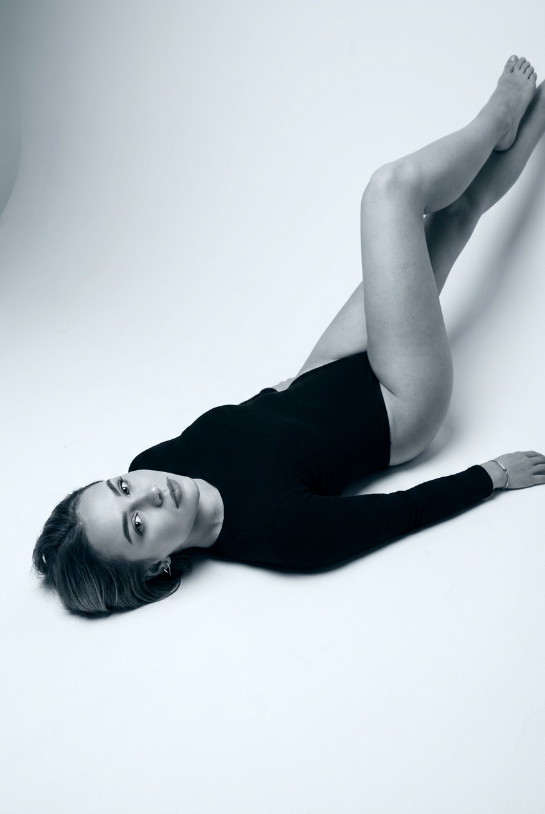
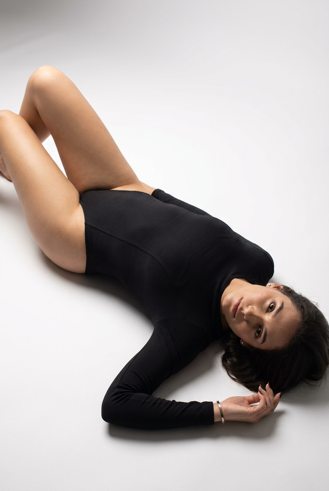
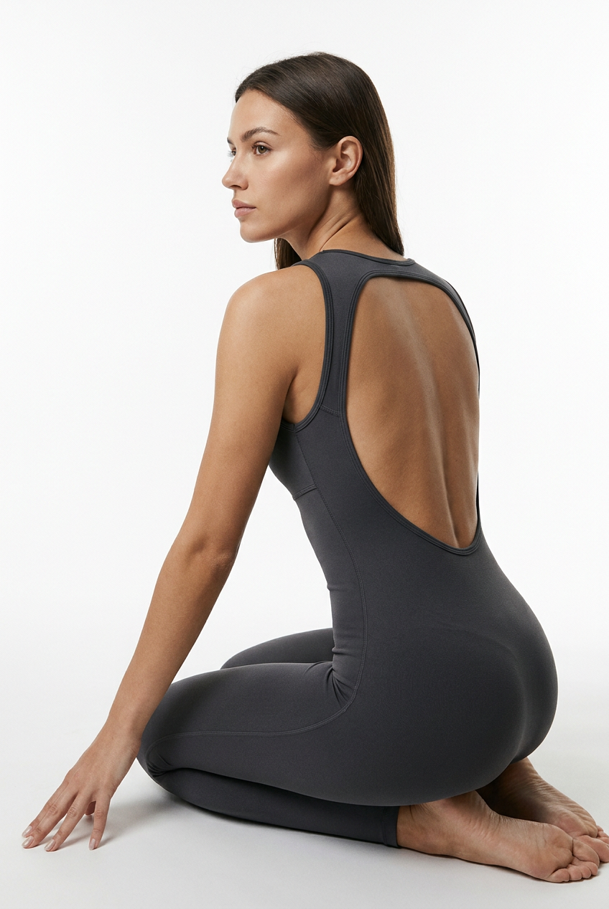
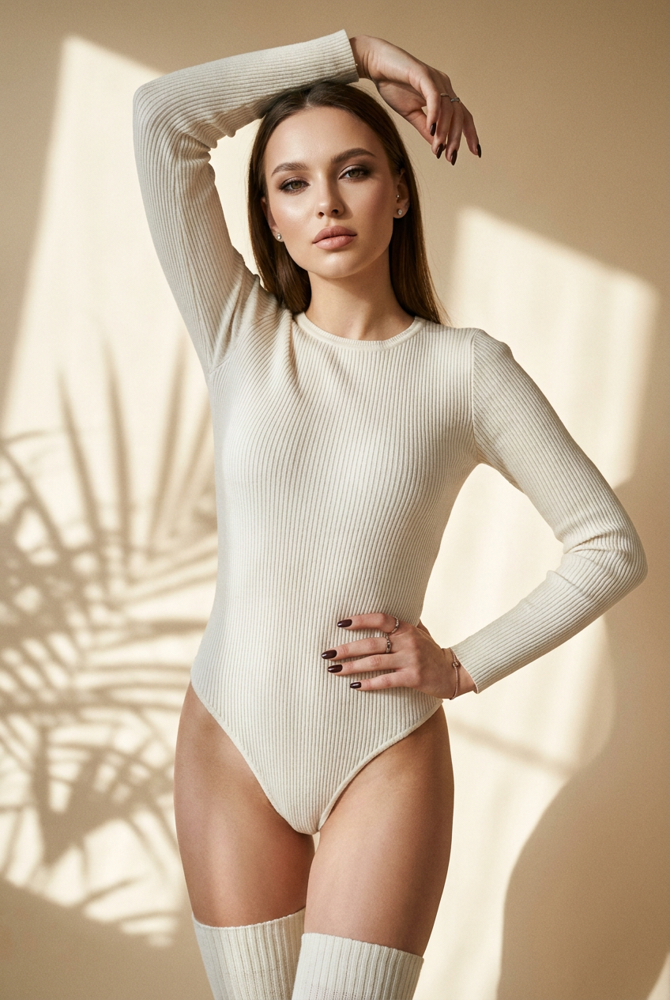
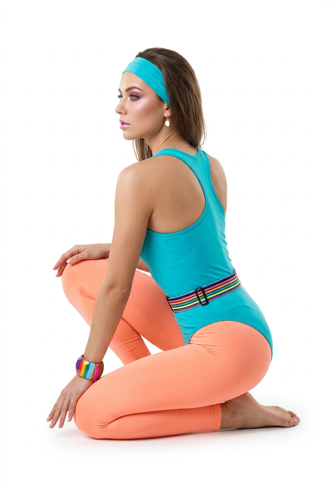
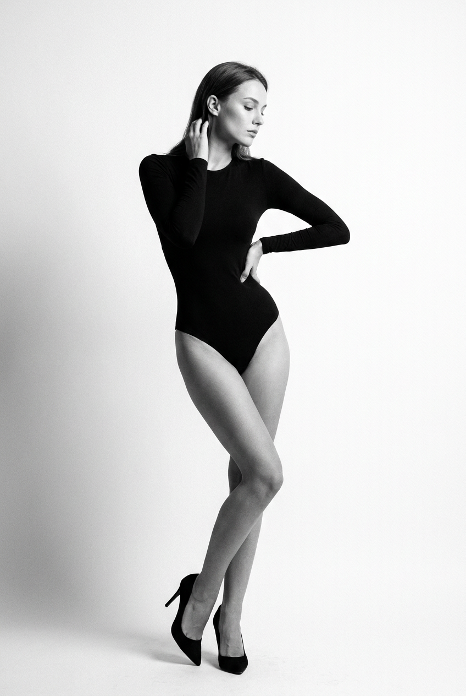
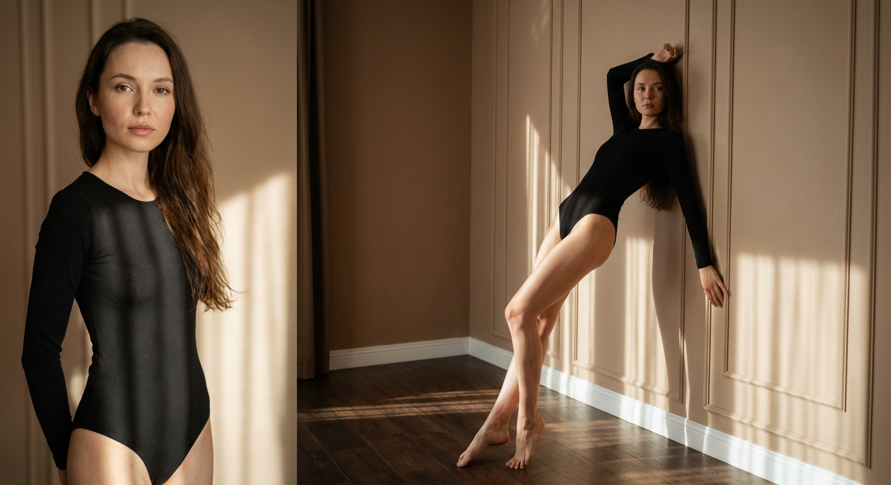

ИИ-фото в боди: 10 промптов для нейросети

Снимки в боди часто выглядят искусственно: ткань просвечивает, руки и пальцы деформируются, а поза теряет естественность. Генерация помогает собрать продуманный fashion-кадр без студии, фотографа и сложной подготовки.
В подборке — 10 сценариев для разных настроений: от чёрно-белого портрета и снимка на полу до спортивного образа, кадра с открытой спиной и тёплой съёмки у стены. Каждый промпт можно использовать как основу и адаптировать под свой референс.
Как сгенерировать такое фото: пошагово
Нужен снимок анфас при ровном свете, лицо в кадре целиком, без тёмных очков и головных уборов. Разрешение от 1000 пикселей по короткой стороне. Чем чётче исходник, тем точнее модель повторит черты.
Выберите сценарий ниже и нажмите «Копировать» — текст уйдёт в буфер целиком, вместе с командой сохранения внешности. Эта команда стоит первой строкой и отвечает за то, чтобы на выходе было ваше лицо, а не случайное.
Кнопка «Сгенерировать» рядом с каждым промптом открывает модель в новой вкладке. Nano Banana Pro работает с референсом лица — в отличие от моделей, которые генерируют портрет с нуля и узнаваемость теряют.
Промпт — в поле ввода, портрет — через загрузку референса. Порядок значения не имеет, но без референса команда сохранения внешности работать не будет: модели нечего сохранять.
Для сторис и ленты берите 9:16, для превью и обложек — 4:3. Первый результат редко идеален: если поза или свет ушли не туда, поправьте соответствующую часть промпта и запустите заново. Обычно хватает двух-трёх итераций.
10 промптов для генерации
1. Чёрное боди на полу
Строго сохранить внешность по загруженному референсу: черты лица, пропорции, мимику и текстуру кожи без изменений. Фотореалистичный студийный fashion/editorial-кадр в светлой минималистичной локации. Девушка с лицом по загруженному референсу, естественными пропорциями и узнаваемыми чертами, спокойное уверенное выражение, взгляд прямо в объектив. Натуральный макияж: аккуратные брови, лёгкий тон, естественный оттенок губ. На модели цельное чёрное боди с длинными рукавами из матовой плотной ткани: без прозрачности, просветов и логотипов, с ровными швами и гладкой посадкой. Модель лежит на животе на светлом студийном полу, корпус слегка приподнят, тело вытянуто по диагонали кадра. Одна рука лежит ладонью вперёд на полу, вторая согнута и служит опорой рядом с корпусом. Ноги вытянуты назад, в композиции заметны линии бёдер и ягодиц, колени ровные. Мягкий рассеянный студийный свет, естественная кожа, вертикальный или горизонтальный editorial-кадр, без анатомических искажений.
2. Терракотовый изгиб

Строго сохранить внешность по загруженному референсу: черты лица, пропорции, мимику и текстуру кожи без изменений. Реалистичный студийный модный портрет в вертикальном формате, тёплый однотонный фон с бежево-песочным градиентом. Девушка с лицом по загруженному референсу, сохранёнными пропорциями и естественной мимикой; выражение спокойное, взгляд направлен к камере. На ней облегающее шоколадно-коричневое, тёмно-терракотовое боди из плотной матовой ткани, без прозрачных деталей, с высокой посадкой и аккуратными швами. Модель сидит на полу в выразительной S-образной позе: корпус слегка развёрнут, грудь подана вперёд, спина мягко выгнута, одна рука поднята за голову, вторая ладонью опирается на пол. Голова повернута к объективу. Кадр 3/4, крупный план с акцентом на силуэт и линии тела. Свет мягкий, направленный, с деликатной тенью по фигуре; кожа ухоженная, макияж лёгкий, детали одежды реалистичные.
3. Олива и крупная цепь

Строго сохранить внешность по загруженному референсу: черты лица, пропорции, мимику и текстуру кожи без изменений. Фотореалистичный fashion/editorial-портрет в студии. Девушка с лицом по загруженному референсу, узнаваемыми глазами, бровями, носом, губами и овалом лица, без эффекта пластиковой кожи. Макияж выразительный, но сдержанный: аккуратная подводка или умеренный смоки, ухоженные брови, матовые либо сатиновые губы розово-бежевого тона. Образ дополняет оливковое облегающее боди с длинным рукавом, асимметричной линией кроя и частично открытой зоной плеча и ключиц. Ткань матовая, плотная, непрозрачная, без лишних складок; вырезы выглядят как часть единого изделия. На шее массивная золотистая цепь с крупными звеньями, в ушах небольшие серьги-гвоздики, на запястье тонкий браслет. Поза модная и собранная, корпус слегка развёрнут, взгляд уверенный. Нейтральный студийный фон, мягкий направленный свет, вертикальная композиция, высокая детализация ткани и украшений.
4. Холодный чёрно-белый кадр

Строго сохранить внешность по загруженному референсу: черты лица, пропорции, мимику и текстуру кожи без изменений. Фотореалистичный студийный fashion-кадр на чистом белом бумажном фоне. Холодная монохромная цветокоррекция с лёгким голубовато-серым оттенком, мягкие кинематографичные тени и аккуратная прорисовка контуров. Девушка с лицом по загруженному референсу, естественной мимикой и реальными пропорциями; взгляд прямо в камеру или немного мимо объектива, выражение спокойное и уверенное. Макияж с подчёркнутыми бровями и глазами, матовые губы натурального оттенка. На модели чёрное облегающее боди с длинными рукавами из плотной матовой ткани, без прозрачности, просветов, логотипов и небрежных складок. Аксессуары почти незаметные: маленькие серьги или тонкий браслет. Свет мягкий, но направленный, чтобы создать графичную тень на белом фоне. Вертикальный editorial-портрет, натуральная текстура кожи, точная анатомия, без лишнего реквизита.
5. Диагональ на белом полу

Строго сохранить внешность по загруженному референсу: черты лица, пропорции, мимику и текстуру кожи без изменений. Студийная fashion-фотография с реалистичной кожей и высокой детализацией. Девушка с лицом по загруженному референсу, естественными чертами и пропорциями, ухоженными бровями и выразительным макияжем глаз — стрелки или мягкий смоки без неоновых оттенков. Губы матовые или сатиновые, кожа без пластикового блеска. На ней чёрное боди с длинными рукавами из матовой ткани с тонкой фактурой; изделие плотное, непрозрачное, с ровными швами и гладкой посадкой без складок и просветов. На запястье тонкий браслет, в ушах небольшие серьги-гвоздики, ногти аккуратно покрыты тёмным или нейтральным лаком. Модель лежит на белом студийном полу по диагонали кадра, тело вытянуто, поза элегантная и естественная, лицо повернуто к камере. Мягкий рассеянный свет, чистая композиция, fashion-editorial настроение, без деформации кистей и стоп.
6. Графит и открытая спина

Строго сохранить внешность по загруженному референсу: черты лица, пропорции, мимику и текстуру кожи без изменений. Фотореалистичный вертикальный fashion-кадр на белом студийном фоне, главный акцент — спина модели. Девушка с лицом по загруженному референсу, сохранёнными чертами, естественной мимикой и реалистичной анатомией. На ней цельное графитовое боди или слип-купальник из плотной матовой ткани с мелкой фактурой, открытой спиной, круглым или слегка заниженным вырезом сзади, тонкими боковыми линиями и гладкими швами. Никакой прозрачности и лишнего декора. Модель сидит или опирается на колени, корпус развёрнут боком к камере, вся спина полностью попадает в кадр. Голова повернута в профиль, взгляд уходит в сторону через плечо. Руки вытянуты вперёд и немного разведены: одна ладонь лежит на полу, вторая помогает держать опору. Ноги стоят естественно, осанка расслабленная, ногти ухоженные. Свет мягкий студийный, фон чистый, пропорции тела правдоподобные.
7. Молочный спортивный образ

Строго сохранить внешность по загруженному референсу: черты лица, пропорции, мимику и текстуру кожи без изменений. Вертикальный фотореалистичный fashion-кадр с мягким студийным или лайфстайл-светом. Девушка с лицом по загруженному референсу, узнаваемыми чертами и естественной кожей с лёгким сиянием. Макияж выразительный: аккуратные брови, умеренные стрелки или смоки, объёмные ресницы, нюдово-розовые либо перламутровые губы. В ушах мини-пусеты, на запястье тонкий браслет или часы, на пальцах несколько неброских колец, ногти покрыты тёмным лаком. Одежда — светло-молочное боди в тонкий вертикальный рубчик, с длинными рукавами, закрытым низом, плотной непрозрачной тканью и ровными швами. Образ дополнен высокими светлыми носками или гольфами в тон, без складок. Поза спортивная, но элегантная, композиция чистая и аккуратная, все элементы выглядят частью одного стилизованного образа. Мягкая тень, реалистичная фактура ткани, без лишних предметов и анатомических ошибок.
8. Бирюзовый фитнес-кадр

Строго сохранить внешность по загруженному референсу: черты лица, пропорции, мимику и текстуру кожи без изменений. Фотореалистичная fashion/fitness-съёмка в светлой студии с высокой экспозицией. Чистый белый фон без текстур и предметов, вертикальный кадр. Девушка с лицом по загруженному референсу, естественными пропорциями и мимикой, ухоженной кожей. На голове яркая бирюзовая повязка. Гламурный макияж с акцентом на глаза: розово-фиолетовые тени, аккуратные стрелки, ухоженные брови, розово-перламутровые губы. В ушах небольшие подвески белого или золотистого цвета, ногти с нейтральным маникюром. На модели бирюзовое спортивное облегающее боди из плотной непрозрачной ткани, с открытой зоной спины и кроем racerback. Низ — яркие персиковые леггинсы с плотной посадкой. На запястье крупный цветной браслет, на талии многоцветный пояс с полосатым рисунком. Свет равномерный high-key, цвета чистые и насыщенные, ткань сидит ровно, без просветов и деформаций.
9. Чёрно-белая стилетто-поза

Строго сохранить внешность по загруженному референсу: черты лица, пропорции, мимику и текстуру кожи без изменений. Чёрно-белая фотореалистичная fashion-фотография в студии, полный рост. Девушка с лицом по загруженному референсу, естественными пропорциями, аккуратными бровями, нейтральным макияжем и слегка подчёркнутыми глазами. Губы натурального оттенка, выражение спокойное и уверенное, взгляд направлен в сторону — профиль или полупрофиль. На модели облегающее чёрное боди или купальник с длинными рукавами из плотной матовой ткани, без прозрачности, просветов, логотипов и лишних складок. Обувь — элегантные чёрные туфли на высоком устойчивом каблуке stiletto, пятка полностью стоит на полу. Поза вытянутая, корпус мягко изгибается в S-образную линию, одна рука поднята к затылку и касается волос, вторая лежит на талии или бедре, одно бедро слегка отведено. Мягкий студийный свет создаёт выразительные серые тени, фон лаконичный, композиция вертикальная, анатомия стоп и кистей реалистичная.
10. Боди у деревянной стены

Строго сохранить внешность по загруженному референсу: черты лица, пропорции, мимику и текстуру кожи без изменений. Реалистичная атмосферная фотосессия в тёплом естественном дневном свете. Девушка с лицом по загруженному референсу, узнаваемыми чертами, натуральной кожей и минимальной ретушью. На ней чёрное цельное боди, посадка аккуратная, силуэт элегантный и вытянутый. Модель опирается спиной на панельную стену, поза напоминает балетную: длинная линия ног, лёгкая грация, расслабленные плечи. В кадре тёмный деревянный пол, на стене и поверхности пола лежат мягкие полосы света от окна. Цветовая палитра тёплая, бежево-коричневая, тени деликатные, настроение кинематографичное. Полный рост, низкая точка съёмки немного снизу, объектив 35–50 мм, широкая диафрагма для мягкого боке, фон слегка размытый. Сохранить естественную геометрию тела, реалистичные руки и стопы, без чрезмерной ретуши. Композиция должна выглядеть как кадр из редакционной фотосессии.
Что важно учесть в этом стиле
Боди лучше описывать не одним словом, а через материал, плотность, фактуру, посадку и детали кроя. Формулировки «матовая плотная ткань», «без прозрачности», «ровные швы» помогают убрать случайные просветы и складки.
Поза должна быть конкретной: укажите, где находятся руки, куда направлен взгляд, на чём лежит вес тела и под каким углом стоит корпус. Для fashion-кадра также задайте фон, источник света, фокусное расстояние и характер ретуши.
Идеи для вариаций
- Замените студийный фон на бетонную стену, тёмный бархат или фактурную штукатурку.
- Попробуйте боди цвета мокрого асфальта, сливового вина, айвори или глубокого синего.
- Добавьте жёсткий свет от одного софтбокса для графичных теней.
- Сделайте серию с объективами 35 мм, 50 мм и 85 мм, чтобы сравнить перспективу.
- Поменяйте настроение: спокойный взгляд, лёгкая улыбка, профиль или взгляд поверх плеча.
Как собрать свой промпт
Сначала опишите тип съёмки и внешность по референсу, затем одежду: цвет, ткань, длину рукава, прозрачность, швы и посадку. После этого задайте позу с положением каждой руки, ног и головы.
В финале добавьте фон, свет, композицию и технику. Для портрета подойдут 50–85 мм, для полного роста и заметной перспективы — 35–50 мм. Если результат нестабилен, меняйте по одному параметру и делайте 4–8 генераций, а не переписывайте весь запрос сразу.
Ошибки, из-за которых кадр не получается
- Слишком общая поза. Нейросеть не понимает, где должны находиться руки и какая часть тела является опорой.
- Нет описания ткани. Боди может стать прозрачным, блестящим или превратиться в набор несвязанных деталей.
- Противоречивый свет. Одновременное требование жёстких теней и равномерного high-key освещения даёт грязный фон.
- Слишком сильная ретушь. Кожа теряет текстуру, а лицо становится непохожим на референс.
- Не задана перспектива. При съёмке снизу ноги и пропорции могут чрезмерно растянуться.
Частые вопросы
Как сделать такое ИИ-фото бесплатно?
Попробуйте Kandinsky и Шедеврум — у них есть бесплатная генерация, но количество попыток, скорость и доступ к функциям могут меняться. Krea AI и Arena.ai позволяют тестировать разные модели, однако бесплатный режим обычно ограничен очередью, кредитами или разрешением. Работа с референсом зависит от конкретной модели: лицо может сохраняться неточно, а сложные позы и пальцы потребуют нескольких перегенераций.
Как сохранить лицо по загруженному референсу?
Используйте изображение хорошего качества, где лицо хорошо освещено и не закрыто волосами или очками. В промпте отдельно укажите естественные пропорции, мимику и отсутствие пластиковой ретуши. Даже при этом результат не будет точной копией: разные модели по-разному работают с референсами, поэтому лучше сделать несколько вариантов и выбрать самый узнаваемый.
Почему нейросеть искажает руки и ноги?
Сложные позы, перекрещенные конечности, опора на ладонь и съёмка с низкой точки увеличивают число ошибок. Упростите положение рук, явно обозначьте опорную поверхность и добавьте фразы «реалистичная анатомия», «пять пальцев», «естественные кисти и стопы». После генерации используйте локальную перерисовку проблемного участка, если сервис её поддерживает.
Как сделать боди непрозрачным и реалистичным?
Опишите плотную матовую ткань, ровные швы, аккуратную посадку, отсутствие просветов и логотипов. Не смешивайте в одном запросе слишком много разных материалов. Если модель всё равно добавляет прозрачность, повторите ограничение в негативном промпте: «без сетки, кружева, глянца, просвечивания и лишних вырезов».